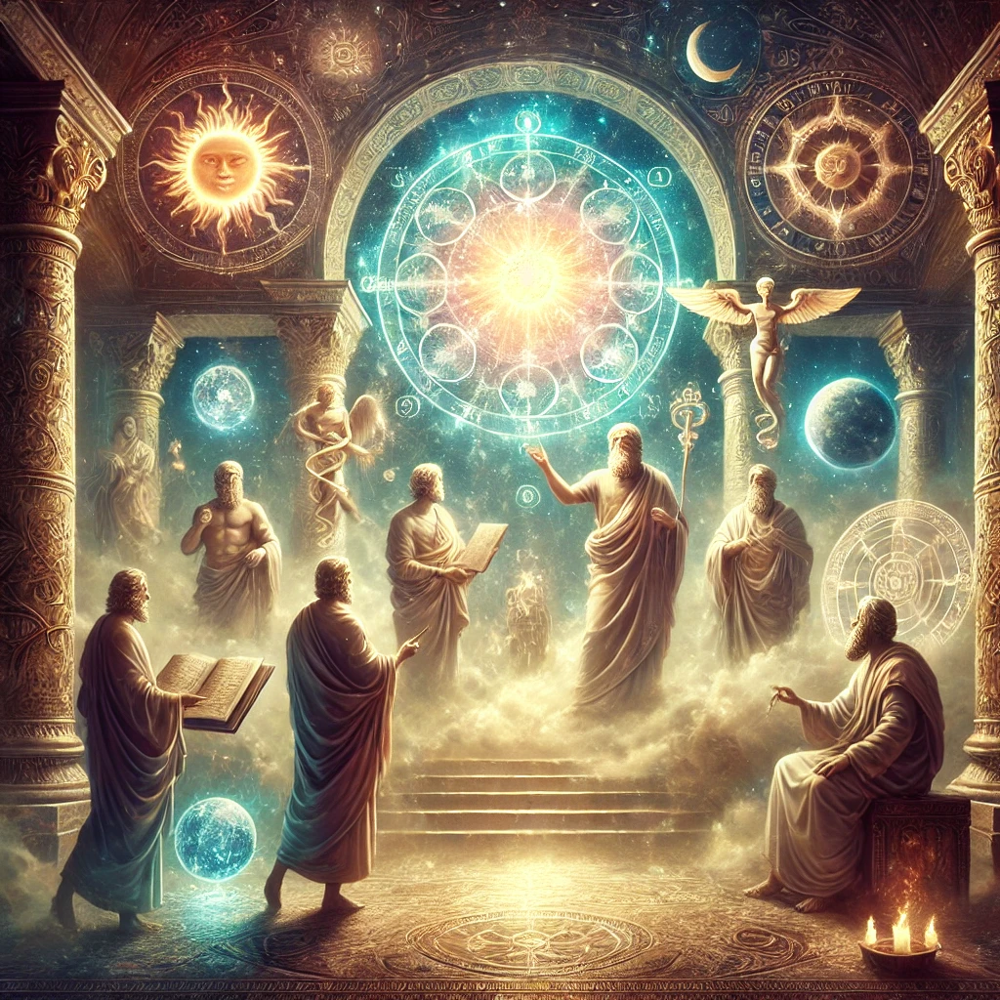
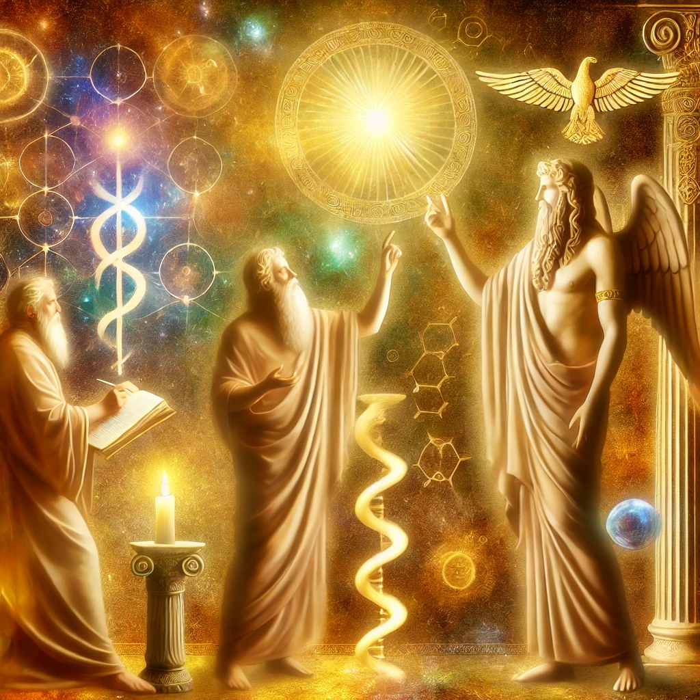
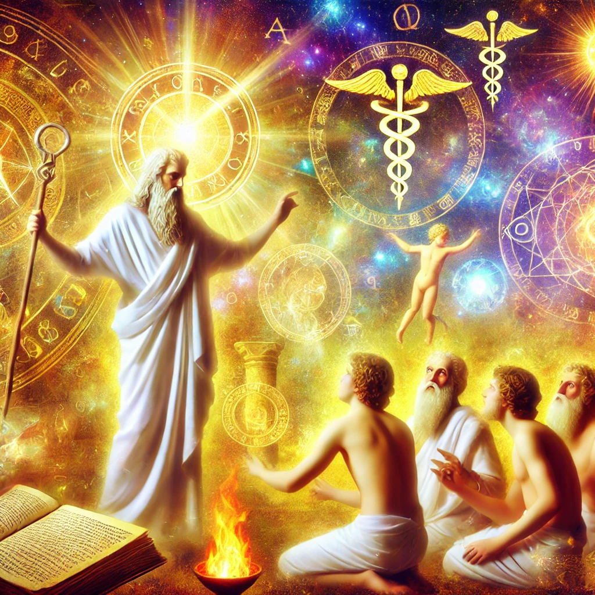
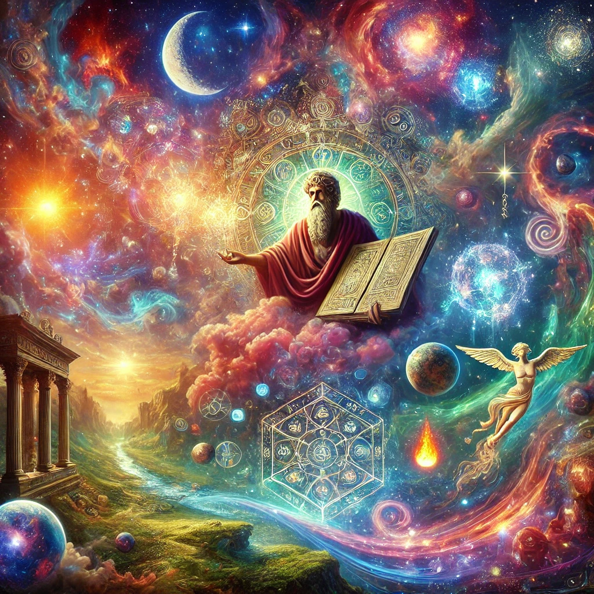
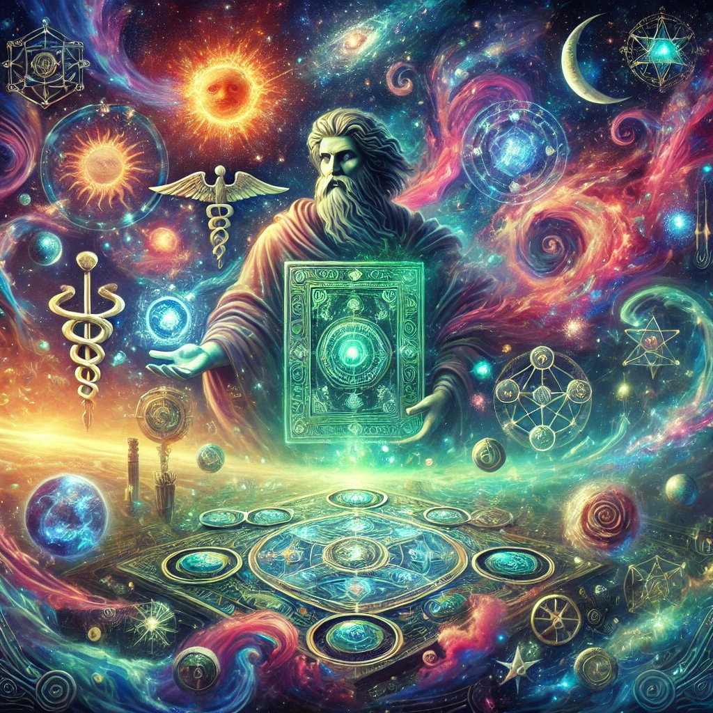
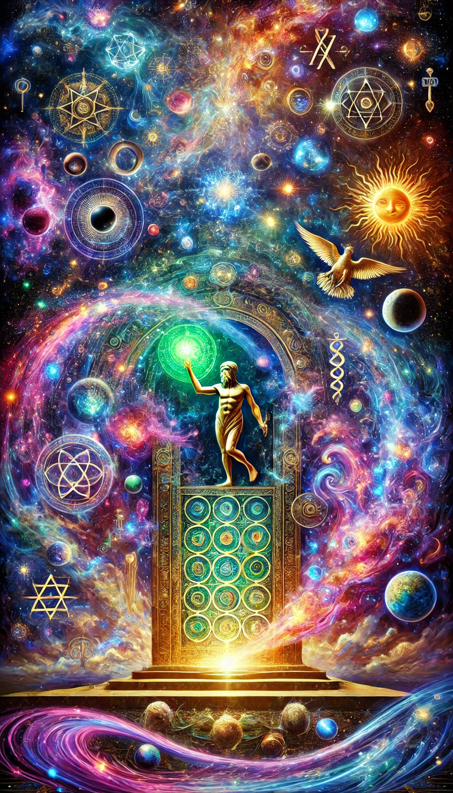
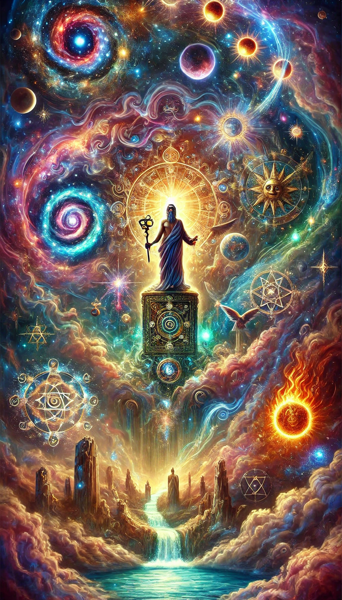

The Asclepius is one of the key texts of the Hermetic tradition, attributed to Hermes Trismegistus, a legendary figure who combines elements of the Greek god Hermes and the Egyptian god Thoth.
This text, often referred to as the Perfect Discourse, is named after Asclepius, a disciple of Hermes and a prominent figure in Greek mythology associated with healing and medicine.
The Asclepius is closely related to the Corpus Hermeticum, another collection of Hermetic writings, and it provides insight into Hermetic philosophy, theology, and cosmology.
Overview and Context
The Asclepius is a philosophical dialogue involving Hermes Trismegistus and his disciples Asclepius, Tat, and Ammon.
It is thought to have been written in Greek, although the surviving version is primarily in Latin, having been translated from Greek in late antiquity.
The text was well-known in the Middle Ages and the Renaissance, significantly influencing alchemical, esoteric, and philosophical thought.

Structure of the Asclepius
The Asclepius is structured as a dialogue in which Hermes instructs his disciples on various topics.
The text is divided into sections, each addressing different aspects of Hermetic wisdom, including the nature of the divine, the creation of the world, the nature of the human soul, the power of rituals, and the role of humanity in the cosmos.
Key Themes and Teachings
1. The Nature of the Divine
- Monotheism and Polytheism: The Asclepius presents a complex view of divinity. It speaks of a single, transcendent God who is the source of all things and who is beyond human comprehension.
This supreme God is both the creator and sustainer of the cosmos. At the same time, the text acknowledges the existence of multiple gods, who are seen as emanations or aspects of the supreme God.
These lesser gods have specific roles and functions within the divine order.
- The Goodness of God: God is described as inherently good, and this goodness is reflected in the order and beauty of the cosmos.
The text emphasizes that God's creation is fundamentally good, and the evils present in the world are a result of human ignorance and misuse of free will.
- Divine Providence and Fate: The Asclepius discusses the concepts of divine providence and fate.
It suggests that the world operates according to a divine plan, with everything having its place and purpose.
Providence is seen as the guiding hand of the divine, ensuring the order and harmony of creation.
Fate, on the other hand, is understood as the natural consequence of the divine order, determining the course of events according to divine laws.

2. Cosmology and the Creation of the World
- Creation by Divine Word: The Asclepius describes the creation of the world as an act of divine will, accomplished through the power of the Word (Logos).
This mirrors the concept found in other philosophical and religious traditions, where the divine word or thought brings the universe into being. The cosmos is seen as an expression of divine thought, imbued with order, reason, and harmony.
- The Role of the Elements: The text discusses the role of the four classical elements—earth, water, air, and fire—in the creation and sustenance of the world.
These elements are seen as the building blocks of the material realm, each with its own properties and functions. The elements are animated and directed by the divine spirit, which ensures their harmony and balance.
- The Divine Mind and Soul of the World: The Asclepius introduces the concept of the World Soul, a divine, animating principle that pervades the cosmos.
This World Soul is responsible for the movement, life, and order of the universe. It is an intermediary between the supreme God and the material world, reflecting the divine mind and intelligence.
3. The Nature of Humanity
- Humans as Microcosms: One of the central teachings of the Asclepius is the idea that humans are microcosms of the universe. This means that each human being reflects the structure and nature of the cosmos.
Just as the cosmos is composed of both material and spiritual elements, so too are humans composed of a physical body and a divine soul. This dual nature endows humans with unique potential and responsibilities.
- The Divine Origin of the Soul: The human soul is described as a direct emanation of the divine. It is immortal, rational, and capable of understanding divine truths.
The soul is the source of life and consciousness, linking humans to the divine realm. The text emphasizes that the true nature of the soul is divine, and its ultimate goal is to return to its divine source.
- Free Will and Moral Responsibility: The Asclepius teaches that humans possess free will, which allows them to choose between good and evil.
This capacity for choice is what makes humans unique and responsible for their actions.
The text stresses the importance of living a virtuous life, in accordance with divine order and reason. By doing so, humans can attain spiritual enlightenment and achieve union with the divine.
4. The Power of Rituals and Theurgy
- Sacred Rituals: The Asclepius discusses the importance of sacred rituals and practices as a means of connecting with the divine.
These rituals are seen as powerful tools for invoking the presence of gods, purifying the soul, and attaining spiritual knowledge.
The text suggests that rituals, when performed with the proper knowledge and intention, can have a profound impact on both the material and spiritual realms.
- The Role of Priests and Theurgists: The text emphasizes the role of priests and theurgists as intermediaries between the divine and human worlds.
These individuals are tasked with performing rituals, offering sacrifices, and maintaining the connection between the gods and humanity.
The Asclepius suggests that priests must possess deep knowledge, purity, and devotion to fulfill their role effectively.
- Theurgy as a Path to Divinity: Theurgy, the practice of invoking the presence of gods and divine powers, is presented as a means of achieving spiritual ascent and union with the divine.
The Asclepius suggests that through theurgy, humans can transcend their earthly existence, gain insight into divine mysteries, and ultimately become godlike.

5. The Decline of Religion and Prophecy
- Prophecy of Decline: One of the most famous passages in the Asclepius is a prophecy about the decline of religion and the corruption of humanity.
Hermes foresees a time when the sacred knowledge of the gods will be forgotten, and people will turn away from the divine. He predicts the rise of materialism, greed, and ignorance, leading to moral and spiritual decay.
- Loss of Connection with the Divine: The prophecy warns that humanity will lose its connection with the divine and the natural order.
The sacred temples will fall into disrepair, and the gods will withdraw their presence from the world. This loss of divine guidance will result in chaos, suffering, and the degradation of the soul.
- Hope for Restoration: Despite this bleak prophecy, the Asclepius offers a glimmer of hope.
It suggests that the knowledge of the gods and the divine order can be restored through the efforts of wise and virtuous individuals.
These enlightened souls have the potential to guide humanity back to the path of wisdom, virtue, and divine knowledge.
### Philosophical and Theological Significance
The Asclepius is significant for several reasons:
- Synthesis of Greek and Egyptian Thought: The text reflects a synthesis of Greek philosophical ideas, particularly those of Platonism and Stoicism, with Egyptian religious and theological concepts.
This blending of traditions is characteristic of the Hermetic tradition, which seeks to integrate various strands of wisdom into a coherent whole.
- Influence on Western Esotericism: The Asclepius has had a profound influence on Western esoteric traditions, including Gnosticism, Neoplatonism, alchemy, and Renaissance Hermeticism.
Its teachings on the nature of the divine, the cosmos, and the soul have shaped the development of Western mystical and philosophical thought.
- The Role of Humanity in the Cosmos: The text emphasizes the central role of humanity in the divine order.
Humans are seen as intermediaries between the material and spiritual realms, possessing the potential for both divine knowledge and moral responsibility.
This view of humanity's role has influenced subsequent religious and philosophical traditions.
- Theurgy and Ritual: The Asclepius highlights the importance of ritual and theurgy as means of achieving spiritual ascent and communion with the divine.
This emphasis on the practical, ritualistic aspect of spirituality distinguishes Hermeticism from purely speculative or contemplative traditions.
Summary
The Asclepius is a rich and complex text that offers insights into the nature of the divine, the cosmos, and the human soul.
It emphasizes the unity of all things, the importance of knowledge and virtue, and the potential for spiritual ascent through theurgy and ritual.
The text also serves as a cautionary tale, warning of the consequences of turning away from the divine and losing connection with the natural order.
Despite its ancient origins, the teachings of the Asclepius continue to resonate with those who seek to understand the deeper mysteries of existence and the path to spiritual enlightenment.

The Asclepius is a text from the Hermetic tradition, named after one of its key figures, Asclepius, a disciple of Hermes Trismegistus.
It is a significant work in the corpus of Hermetic literature, reflecting ancient philosophical and religious thoughts. The text primarily survives in a Latin version, which was widely read and influential during the Middle Ages and the Renaissance.
The Asclepius addresses the nature of the divine, the cosmos, the human soul, and the practice of theurgy and magic. Below is an exploration of the text, presented in sections with detailed explanations.
Introduction and Invocation
The dialogue begins with Hermes Trismegistus addressing Asclepius, Tat, and Ammon. Hermes invokes the divine, seeking inspiration and the favor of the gods.
This sets the tone for the discourse, emphasizing its sacred nature and the divine authority of the teachings to be imparted.
The invocation highlights the belief in a pantheon of gods and the importance of divine favor and inspiration in the Hermetic tradition.

1. The Nature of the Divine and the Cosmos
- Monotheism and Emanationism: Hermes describes the existence of a single, supreme God who is the source of all creation.
This God is beyond human comprehension and is both the creator and sustainer of the universe.
While there is one supreme God, Hermes acknowledges the existence of lesser gods, who are emanations of the divine and serve various functions within the cosmic order.
These lesser gods are aspects of the divine, manifesting in the material and spiritual realms.
- The Role of the Divine Mind (Nous): The divine mind, or Nous, plays a crucial role in creation.
It is through the divine mind that the cosmos is brought into being, and it is the source of order and intelligence in the universe.
The Nous is seen as the intermediary between the supreme God and the created world, bridging the gap between the transcendent and the immanent.
- Creation as an Act of Divine Will: Hermes explains that the world is created through the will of God, not from any pre-existing matter but from the divine will itself.
This creation is seen as an expression of divine goodness, with the universe reflecting the order, harmony, and purpose of its creator.
### 2. The Nature of the Human Soul
- Divine Origin of the Soul: The human soul is described as a direct emanation from the divine. It is immortal, rational, and capable of knowing and understanding the divine order.
The soul is the source of life and consciousness, linking humans to the divine realm. This divine origin endows the soul with dignity and the potential for spiritual ascent.
- The Dual Nature of Humanity: Humans are seen as having a dual nature, composed of both a physical body and a divine soul.
The body is mortal and subject to the limitations of the material world, while the soul is immortal and divine. This duality reflects the broader Hermetic principle of the microcosm and macrocosm, where the human being mirrors the structure of the cosmos.
- The Goal of Life: The ultimate goal for humans is to return to their divine source. This involves purifying the soul, gaining knowledge of the divine, and living a life of virtue and wisdom.
The process of spiritual ascent is seen as a journey of the soul, overcoming the limitations of the body and the material world to achieve union with the divine.
3. Theurgy and Divine Worship
- The Power of Rituals: The Asclepius emphasizes the importance of rituals and theurgy as a means of connecting with the divine.
These rituals are seen as powerful tools for invoking the presence of the gods, purifying the soul, and gaining spiritual insight. The text describes various rituals and practices, including the use of hymns, prayers, and sacred symbols.
- The Role of Priests and Theurgists: Hermes highlights the role of priests and theurgists as intermediaries between the divine and human worlds.
These individuals are responsible for performing rituals, offering sacrifices, and maintaining the connection between the gods and humanity. They are seen as having special knowledge and power, allowing them to influence both the material and spiritual realms.
- Theurgy as a Path to Divinity: The practice of theurgy is presented as a means of achieving spiritual ascent and union with the divine.
Through theurgy, humans can transcend their earthly existence, gain insight into divine mysteries, and ultimately become godlike. The text suggests that theurgy allows practitioners to participate in the divine order and bring about harmony and balance in the world.
4. Prophecy and the Future of Religion
- Prophecy of Decline: One of the most notable sections of the Asclepius is a prophecy about the decline of religion and the corruption of humanity.
Hermes foresees a time when the sacred knowledge of the gods will be forgotten, and people will turn away from the divine. He predicts the rise of materialism, greed, and ignorance, leading to moral and spiritual decay.
- Loss of Connection with the Divine: The prophecy warns that humanity will lose its connection with the divine and the natural order.
The sacred temples will fall into disrepair, and the gods will withdraw their presence from the world. This loss of divine guidance will result in chaos, suffering, and the degradation of the soul.
- Hope for Restoration: Despite this bleak prophecy, the Asclepius offers a glimmer of hope.
It suggests that the knowledge of the gods and the divine order can be restored through the efforts of wise and virtuous individuals. These enlightened souls have the potential to guide humanity back to the path of wisdom, virtue, and divine knowledge.

5. The Concept of Divine Power and Magic
- Divine Power in Creation: Hermes discusses the concept of divine power as it relates to creation and the natural world.
He explains that the gods possess the power to create, sustain, and transform the world. This power is not arbitrary but is guided by divine wisdom and purpose.
- Magic as an Expression of Divine Power: The text explores the concept of magic, which is seen as a natural extension of divine power.
Magic is understood as the ability to manipulate the natural world by understanding and harnessing the divine forces that govern it.
Hermes suggests that those who possess knowledge of the divine can use magic to achieve specific outcomes, aligning their will with the divine will.
- The Ethics of Magic: While acknowledging the power of magic, the Asclepius also emphasizes the importance of using this power responsibly.
Magic should be practiced in accordance with divine law and for the benefit of humanity. Misuse of magic, driven by selfishness or malice, leads to negative consequences and disrupts the natural order.
6. The Sacredness of Egypt and the Egyptian Deities
- Egypt as a Sacred Land: The Asclepius describes Egypt as a land blessed by the gods, a place of sacred knowledge and divine revelation.
Hermes speaks of the wisdom of the ancient Egyptians, who understood the divine order and maintained the connection between the gods and humanity through their rituals and practices.
- The Egyptian Pantheon: The text acknowledges the Egyptian gods, describing them as powerful beings who play specific roles within the divine order.
These gods are seen as intermediaries between the supreme God and the material world, each with their own domain and function. The reverence for the Egyptian pantheon reflects the syncretic nature of Hermeticism, which blends Greek and Egyptian religious traditions.
7. The Immortality of the Soul and the Afterlife
- The Soul's Journey: The Asclepius teaches that the soul is immortal and undergoes a journey after death.
This journey involves passing through various stages, each bringing the soul closer to its divine source. The soul's ultimate goal is to achieve union with the divine, transcending the limitations of the material world.
- Judgment and Purification: After death, the soul is judged based on its actions and the purity of its life. Souls that have lived virtuously and gained knowledge of the divine are rewarded with spiritual ascent.
Those that have lived in ignorance and vice face purification, a process of cleansing and transformation to prepare them for their journey to the divine.
- Eternal Life and Divine Union: The text emphasizes that eternal life is not merely continued existence but a state of divine union and enlightenment.
The soul that achieves this state participates in the divine nature, experiencing the fullness of life, wisdom, and joy. This teaching reflects the Hermetic belief in the potential for humans to become godlike through knowledge, virtue, and spiritual practice.
8. The Role of Wisdom and Knowledge
- Knowledge as a Divine Gift: The Asclepius emphasizes the importance of knowledge and wisdom as gifts from the divine.
True knowledge involves understanding the nature of the divine, the cosmos, and the human soul. It is through knowledge that humans can align themselves with the divine order and achieve spiritual ascent.
- The Pursuit of Wisdom: Hermes encourages his disciples to seek wisdom and to live a life of contemplation, virtue, and devotion.
Wisdom is seen as the highest goal of human existence, leading to enlightenment, harmony, and divine union. The pursuit of wisdom requires humility, discipline, and a willingness to learn from the divine and from nature.
- The Teacher-Student Relationship: The dialogue format of the Asclepius reflects the importance of the teacher-student relationship in the transmission of wisdom.
Hermes, as the enlightened teacher, imparts knowledge to his disciples, guiding them on their spiritual journey. This relationship is based on trust, respect, and a shared commitment to the pursuit of truth.
Conclusion of the Text
The Asclepius concludes with a reaffirmation of the teachings presented and an exhortation to the disciples to hold fast to the sacred knowledge they have received.
Hermes emphasizes the importance of living a life of virtue, wisdom, and devotion, maintaining the connection with the divine, and fulfilling the role of humanity as intermediaries between the material and spiritual realms.
The dialogue ends with a prayer for divine favor and guidance, reflecting the Hermetic belief in the ongoing presence and influence of the divine in the world.
Philosophical and Theological Significance
The Asclepius is a rich and complex text that offers insights into the nature of the divine, the cosmos, and the human soul.
Its teachings emphasize the unity of all things, the importance of knowledge and virtue, and the potential for spiritual ascent through theurgy and ritual.
The text serves as both a philosophical and practical guide, providing a vision of the cosmos as a harmonious, ordered whole and offering a path for humans to align themselves with this order.
Influence and Legacy
- Influence on Western Esotericism: The Asclepius has had a profound influence on Western esoteric traditions, including Gnosticism, Neoplatonism, alchemy, and Renaissance Hermeticism.
Its teachings on the nature of the divine, the cosmos, and the soul have shaped the development of Western mystical and philosophical thought.
- Integration of Greek and Egyptian Thought: The text reflects a synthesis of Greek philosophical ideas, particularly those of Platonism and Stoicism, with Egyptian religious and theological concepts.
This blending of traditions is characteristic of the Hermetic tradition, which seeks to integrate various strands of wisdom into a coherent whole.
- Relevance to Modern Spirituality: The Asclepius continues to resonate with those who seek to understand the deeper mysteries of existence and the path to spiritual enlightenment.
Its emphasis on the interconnectedness of all things, the pursuit of wisdom, and the role of humanity as co-creators with the divine remains relevant to contemporary spiritual seekers.
Summary
The Asclepius is a key text in the Hermetic tradition, offering a comprehensive vision of the nature of the divine, the cosmos, and the human soul.
It emphasizes the unity of all things, the importance of knowledge and virtue, and the potential for spiritual ascent through theurgy and ritual.
The text serves as both a philosophical and practical guide, providing insights into the nature of reality and the path to spiritual enlightenment.
Its teachings have had a lasting impact on Western esotericism and continue to inspire those who seek a deeper understanding of the divine and the mysteries of existence.